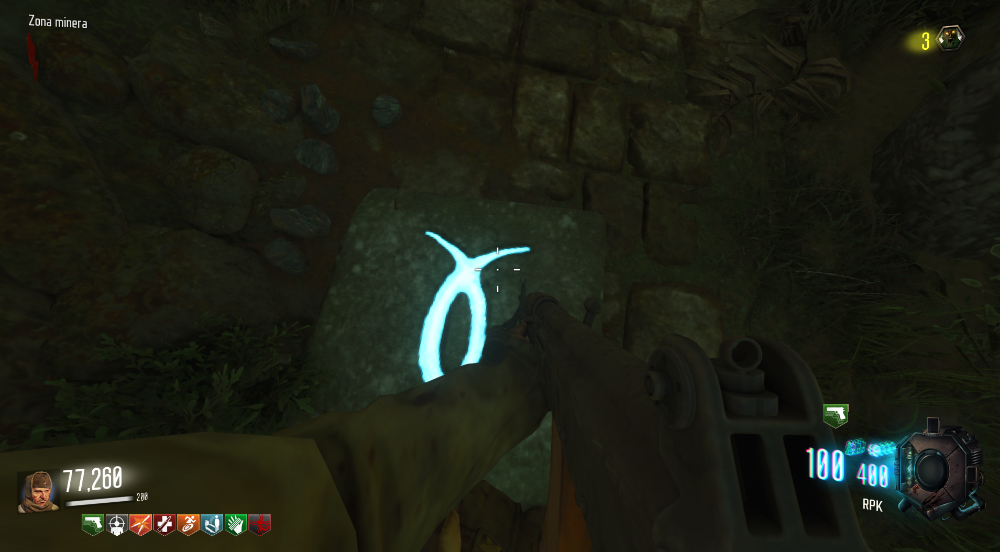

Requisitos:
Ser 4 jugadores y tener la BabyGun mejorada(31-79 JGb215)
Lo primero será entrar en el modo eclipse.
Cada jugador tendrá que presionar a la vez los 4 botones alrededor del Quick Revive para entrar en este modo.
Cuando sea de noche, empezaremos a jugar a las parejas.
Parejas de símbolos:
Tendremos que ir a la zona de la vagoneta y justo antes de entrar al túnel B, presionaremos el botón de la pared.
Un jugador se quedará en esta zona y otro irá a la zona del puente de madera.
En el suelo habrán 12 baldosas que al situarnos encima mostrarán un símbolo.

Tendremos que identificar un símbolo, bajarnos, esperar a que el compañero encuentre el misma símbolo en su lado y cuando estemos seguros, ambos nos pondremos encima del símbolo.
Si la baldosa desaparece es que lo hemos hecho correctamente y podremos seguir con otra.
Aquí una herramienta que muestra símbolos y sus nombres para poder identificarlos rápido con el compañero e ir marcando los que ya habéis hecho:
Presión:
Tendremos que volver a activar el eclipse y dirigirnos a la entrada del tobogán de agua.
Tres jugadores deberán lanzarse y quedarse quietos, para aplicar presión en el final.
El cuarto jugador se tirará después y mantendrá la tecla o botón de interacción mirando a la pared de la derecha para activar una palanca.
Cuando todos se encuentren abajo, tendremos que esperar a que se haga de día para movernos.
Cristal:
Volveremos al tobogán de agua y tiraremos algo explosivo al cristal que se encuentra a su derecha. Sirve también la Raygun
El cristal caerá y tendremos que dispararle con la BabyGun.(Aún no hace falta que esté mejorada)
Luego acuchillaremos la bola y la seguiremos.
Zombie de fuego:
Tendremos que esperar a que aparezca un zombie de fuego.
En modo eclipse, lo llevaremos por el túnel de la zona de la vagoneta.
Tendremos que accionar esta válvula roja 4 veces para que el zombie prenda el gas que se libera.
Son 4 salidas de gases que deberá incendiar: